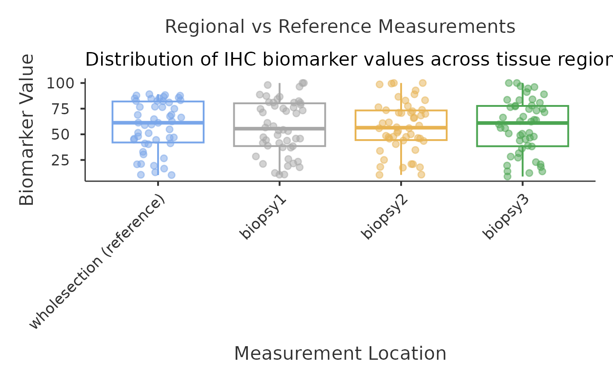
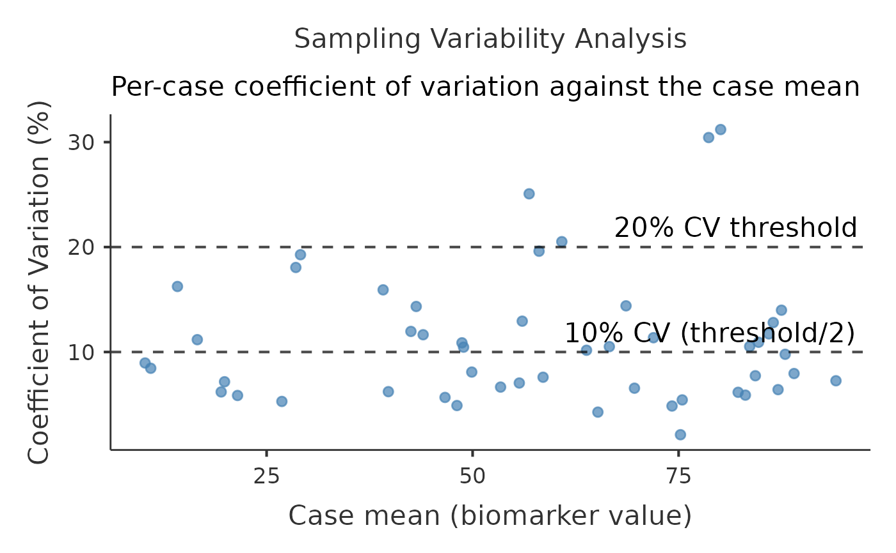

Quantifies how well regional IHC measurements (biopsies, cores, fields) represent a case. With a reference measurement (whole section, hotspot or overall score) it reports the Spearman correlation of each region with the reference, the absolute-agreement ICC(2,1), the per-case coefficient of variation, and, for each region, the mean difference from the reference with its 95 percent CI and Bland-Altman limits of agreement. Without a reference it compares the regions with one another. Each difference is judged against a margin set by the user (bias_margin, default 5 percent of the comparison mean): ruled out when its 90 percent CI lies inside the margin (two one-sided tests), shown to be material when a Bonferroni-adjusted CI lies entirely beyond it, and inconclusive otherwise. Optional variance components, sample-size planning for ICC precision (Bonett 2002) and comparisons between spatial compartments.
Usage
ihcheterogeneity(
data,
wholesection = NULL,
biopsy1 = NULL,
biopsy2 = NULL,
biopsy3 = NULL,
biopsy4 = NULL,
biopsies = NULL,
spatial_id = NULL,
compareCompartments = FALSE,
compartmentTests = FALSE,
analysis_type = "comprehensive",
sampling_strategy = "unknown",
cv_threshold = 20,
correlation_threshold = 0.8,
bias_margin = 5,
show_variability_plots = FALSE,
variance_components = FALSE,
sample_size_planning = FALSE,
generate_recommendations = FALSE,
showInterpretation = FALSE,
showSummary = FALSE,
showGlossary = FALSE,
showReportSentences = FALSE,
showAssumptions = FALSE
)Arguments
- data
the data as a data frame
- wholesection
Optional reference measurement for comparison with regional measurements. Can be whole section average, hotspot area, or overall tumor measurement. Leave empty for inter-regional comparison studies. Example: Ki67 proliferation index (0-100 percent), ER H-score (0-300), PR percentage (0-100 percent).
- biopsy1
Continuous biomarker measurement from first tissue region or area. Should represent same biomarker as reference measurement for heterogeneity comparison. Example: Ki67 percent from tumor periphery, ER H-score from invasive front.
- biopsy2
Second tissue region biomarker measurement for heterogeneity analysis
- biopsy3
Third tissue region biomarker measurement
- biopsy4
Fourth tissue region biomarker measurement
- biopsies
Further regional measurements, any number, analysed like Regional Measurements 1 to 4.
- spatial_id
The compartment each case was sampled from (e.g., Central/Invasive, Preinvasive/Invasive): one row per case, one compartment per case. Data with one row per case and compartment count each case once per row, as if they were different patients, which overstates the sample and narrows every interval. Compartments are listed in the level order of the variable; cases without an identifier are left out of the compartment tables. In R, convert a haven-labelled code column with haven::as_factor() first, or the codes are shown instead of the labels.
- compareCompartments
Compares the ICC, the within-case CV and, when a reference is supplied, the mean bias between spatial compartments. Requires the Spatial Region ID variable; compartments need at least 3 cases.
- compartmentTests
Tests whether heterogeneity differs between compartments: Kruskal-Wallis test on the per-case CV (is one compartment more heterogeneous?), Brown-Forsythe test on the spread of per-case CVs, and Kruskal-Wallis test on the per-case mean biomarker level. Compartments need at least 3 cases.
- analysis_type
Primary focus of the heterogeneity analysis. (The former 'bias' level was merged into 'reproducibility': the two were computationally identical - the bias table is always computed when a reference is supplied.)
- sampling_strategy
How the regions were chosen. Recorded for reporting only: it changes no computation. Random, systematic or stratified sampling adds a notice on how to read the estimates; 'Not specified' adds nothing.
- cv_threshold
Largest acceptable within-case coefficient of variation (the root mean square of the per-case CVs), in percent. The CV is graded low at or below half of this value, moderate up to it and high above it. Choose it for your marker and scoring method before looking at the results.
- correlation_threshold
Smallest acceptable Spearman correlation. With a reference, the mean correlation of the regions with the reference is graded, unless a region is shown to fall below the threshold (its upper 95 percent limit below it), in which case that region is graded; without a reference, the mean correlation between regions is graded. Choose it before looking at the results.
- bias_margin
Largest systematic difference, as a percentage of the comparison mean (the reference, or without one the mean of the two regions of each pair), that is still clinically acceptable. A difference is ruled out when its 90 percent CI (a Fieller interval for the ratio) lies inside the margin (two one-sided tests), and shown to be material when a Bonferroni-adjusted CI lies entirely beyond it; otherwise it is inconclusive. Without a reference every pair of regions is compared, and the regions agree only when every pair is ruled out. A difference shown to change with the level (proportional bias) is also judged at the 5th and 95th percentiles of the level, and is ruled out only when both ends lie inside the margin. Choose it before looking at the results.
- show_variability_plots
Show the regional-measurement, per-case CV and spatial plots. They are always shown under the Variance and Comprehensive focuses (Comprehensive is the default), so this option adds them under the Reproducibility focus.
- variance_components
Two-way random-effects decomposition into between-case, within-case and method variance. Always shown under the Variance and Comprehensive focuses (Comprehensive is the default), so this option adds it under the Reproducibility focus.
- sample_size_planning
Number of cases needed to estimate the ICC with a 95 percent CI of width 0.20 or 0.10 at planning ICCs of 0.75 and 0.90 and at the observed consistency ICC, for the number of measurements per case in this analysis. Refines the Bonett (2002) approximation by integrating the exact F-interval width under a balanced normal ANOVA model. Controls expected width, not assurance that every interval meets the target. Always shown under the Comprehensive focus.
- generate_recommendations
Recommendations on regions per case, calibration of systematic differences and quality control, derived from the results of this analysis. They are shown inside the clinical interpretation, so they need showInterpretation = TRUE.
- showInterpretation
Display the clinical interpretation report: study design, key findings and the overall verdict (and the recommendations, when generate_recommendations is TRUE).
- showSummary
Display natural-language summary of heterogeneity analysis results
- showGlossary
Display definitions of statistical terms (ICC, CV, correlation)
- showReportSentences
Display pre-formatted sentences ready for clinical reports and publications
- showAssumptions
Display analysis assumptions, data requirements, and methodological considerations
Value
A results object containing:
results$welcome | Welcome screen shown when no variables selected | ||||
results$notices | a html | ||||
results$interpretation | a html | ||||
results$report_sentences | Pre-formatted sentences ready for clinical reports and publications | ||||
results$assumptions | Analysis assumptions, data requirements, and methodological considerations | ||||
results$summary | Natural-language summary of heterogeneity analysis results | ||||
results$glossary | Definitions of key statistical terms used in the analysis | ||||
results$reproducibilitytable | Correlation and reliability metrics | ||||
results$samplingbiastable | Systematic bias assessment between methods | ||||
results$variancetable | Sources of measurement variability | ||||
results$samplesizetable | Cases needed to estimate the ICC with a chosen 95 percent CI width (Bonett 2002) | ||||
results$spatialanalysistable | Variability across spatial regions | ||||
results$compartmentComparison | Statistical comparison of heterogeneity metrics between compartments | ||||
results$compartmentTests | Formal statistical tests comparing heterogeneity across compartments | ||||
results$biopsyplot | Distribution comparison across regional measurements and reference (if provided) | ||||
results$variabilityplot | Coefficient of variation by case | ||||
results$spatialplot | Spatial distribution of biomarker values |
Tables can be converted to data frames with asDF or as.data.frame. For example:
results$reproducibilitytable$asDF
as.data.frame(results$reproducibilitytable)
Examples
# \donttest{
data('ihcheterogeneity_test', package = 'OncoPath')
# Three regional Ki67 scores against the whole-section score
ihcheterogeneity(
data = ihcheterogeneity_test,
wholesection = 'wholesection',
biopsy1 = 'biopsy1',
biopsy2 = 'biopsy2',
biopsy3 = 'biopsy3',
bias_margin = 5)
#>
#> IHC HETEROGENEITY ANALYSIS
#>
#> Reproducibility Assessment
#> ─────────────────────────────────────────────────────────────────────────────────────────────────────────────────────────────────────────────────────────────
#> Reproducibility Metric Value 95% CI Lower 95% CI Upper Clinical Interpretation
#> ─────────────────────────────────────────────────────────────────────────────────────────────────────────────────────────────────────────────────────────────
#> Mean Regional-Reference Correlation 0.9165 0.8414 0.9568 Meets your threshold (≥ 0.8)
#> Spearman correlation: biopsy1 vs reference 0.9216 0.8505 0.9596 Meets your threshold (≥ 0.8)
#> Spearman correlation: biopsy2 vs reference 0.8876 0.7906 0.9412 Meets your threshold (≥ 0.8)
#> Spearman correlation: biopsy3 vs reference 0.9402 0.8847 0.9695 Meets your threshold (≥ 0.8)
#> ICC(2,1) - absolute agreement 0.8992 0.8505 0.9363 Good reliability
#> ICC(3,1) - consistency (bias-blind) 0.8975 0.8481 0.9352 Ignores systematic offset; compare with absolute agreement above
#> Mean Inter-Regional Correlation 0.8497 . . Meets your threshold (≥ 0.8)
#> Within-case CV (%) - region vs reference 12.6092 . . Moderate variability
#> Median per-case CV (%) 9.9754 . . Descriptive, robust to a few extreme cases; not graded
#> ─────────────────────────────────────────────────────────────────────────────────────────────────────────────────────────────────────────────────────────────
#> Note. These statistics describe agreement in this dataset only: they are not an assay or external validation, and they do not describe agreement at the
#> score cut-offs used to classify cases. Each row must be a different patient.
#> Note. Correlation CIs use the Fisher z transformation with the Spearman variance of Bonett & Wright (2000); the CI of the mean correlation uses the
#> smallest number of pairs and is conservative. Coverage falls below 95% when r is above about 0.97.
#> Note. Reliability bands follow Koo & Li (2016): below 0.50 poor, 0.50 to 0.75 moderate, 0.75 to 0.90 good, above 0.90 excellent. Judge the band from
#> the 95% CI as well as from the point estimate.
#> Note. Per-case CV = SD / mean of that case's measurements. The within-case CV is their root mean square, which unlike their plain average does not fall
#> when a case has fewer measurements; the median is descriptive and not graded.
#>
#>
#> Sampling Bias Analysis
#> ───────────────────────────────────────────────────────────────────────────────────────────────────────────────────────────────────────────────────────────────────────────────────────────────────────────────────────────────────────────────────────────────────────────────────────────────────
#> Comparison N Mean Difference (Region - Reference) Lower Upper Lower Upper Lower Upper Lower Upper p-value Hedges' g (paired) Slope p-value Clinical Impact
#> ───────────────────────────────────────────────────────────────────────────────────────────────────────────────────────────────────────────────────────────────────────────────────────────────────────────────────────────────────────────────────────────────────────────────────────────────────
#> biopsy1 vs reference 50 -0.7618 -3.3857 1.8621 -18.8579 17.3344 -23.3723 -14.3436 12.8200 21.8487 .562 -0.0812 0.0784 .052 -1.3% (90% CI -5.1% to 2.5%): inconclusive at the 5% margin
#> biopsy2 vs reference 50 -0.6782 -3.4892 2.1328 -20.0646 18.7081 -24.9008 -15.2284 13.8719 23.5443 .630 -0.0675 0.0090 .855 -1.2% (90% CI -5.2% to 2.9%): inconclusive at the 5% margin
#> biopsy3 vs reference 50 -0.3488 -2.5170 1.8195 -15.3025 14.6050 -19.0329 -11.5721 10.8745 18.3354 .748 -0.0450 0.0797 .055 -0.6% (90% CI -3.8% to 2.5%): ruled out, within the 5% margin
#> Mean of all regions vs reference 50 -0.5963 -1.8533 0.6608 -9.2657 8.0732 -11.4285 -7.1030 5.9105 10.2359 .345 -0.1327 0.0068 .792 -1.0% (90% CI -2.8% to 0.8%): ruled out, within the 5% margin
#> ───────────────────────────────────────────────────────────────────────────────────────────────────────────────────────────────────────────────────────────────────────────────────────────────────────────────────────────────────────────────────────────────────────────────────────────────────
#> Note. 4 paired comparisons are reported; the p-values test against zero and are unadjusted. With a margin of 5% of the comparison mean, a difference is ruled out when its 90% CI lies within the margin (two one-sided tests) and shown to be material when its Bonferroni-adjusted 97.5% CI
#> lies entirely beyond the margin; otherwise it is inconclusive.
#> Note. The CIs of the percentage difference are Fieller intervals for the ratio of means, which allow for the uncertainty in the comparison mean.
#> Note. The CIs of the limits of agreement use the approximate standard error of Bland & Altman (1999), SD x sqrt(1/n + 1.96^2 / (2(n - 1))); they are wide in small samples.
#> Note. Mean difference = region minus reference. Limits of agreement (Bland & Altman 1986): 95% of individual differences are expected between these bounds if the differences are roughly normal.
#> Note. Proportional bias: Slope of the difference on the mean of the two measurements (the region and the reference), with heteroscedasticity-robust (HC3) standard errors; p is unadjusted. Measurement error alone tilts a slope on the reference value downwards and a slope on the region
#> value upwards, so a difference is treated as changing with the level only when its slope differs from zero (p below 0.05 divided by the number of comparisons) in the same direction on all three: the reference value, the region value and their mean (Krouwer 2008). Such a difference is
#> judged at the 5th and 95th percentiles of the mean, against the margin at the comparison mean taken as fixed; it can stop a difference from being ruled out but never shows it to be material (Bland & Altman 1995, 1999).
#>
#>
#> Variance Component Analysis
#> ───────────────────────────────────────────────────────────────────────────────────────────────────
#> Variance Component Variance Percentage (%) Contribution to Total Variance
#> ───────────────────────────────────────────────────────────────────────────────────────────────────
#> Between-Case Variance 576.0006 89.7540 Major contributor
#> Within-Case Variance (Sampling) 65.7544 10.2460 Small share of total variance
#> Method Variance 0.0000 0.0000 Small share of total variance
#> Total Variance 641.7550 100.0000 Sum of all variance components
#> ───────────────────────────────────────────────────────────────────────────────────────────────────
#> Note. Two-way random-effects decomposition (value = case + method + error) on 50 cases
#> measured by 4 methods; components sum to the total variance. The method variance estimate was
#> negative and has been truncated to zero. Every share depends on how much the cases differ
#> from one another, and the share labels are descriptive cut-offs, not clinical sizes: judge
#> how much the measurements disagree from the within-case CV, and a systematic offset from the
#> Sampling Bias Analysis table.
#>
#>
#> Sample Size for ICC Precision
#> ─────────────────────────────────────────────────────────────────────────────────────────────────────────────────────────────────────────
#> Scenario Planning ICC Expected CI Width (current n) Width 0.20 Width 0.10
#> ─────────────────────────────────────────────────────────────────────────────────────────────────────────────────────────────────────────
#> Planning ICC 0.75 (lower limit of good reliability) 0.7500 0.1868 44 171
#> Planning ICC 0.90 (lower limit of excellent reliability) 0.9000 0.0875 13 40
#> Observed ICC(3,1), consistency 0.8975 0.0894 13 41
#> ─────────────────────────────────────────────────────────────────────────────────────────────────────────────────────────────────────────
#> Note. Planning for the consistency ICC, ICC(3,1), with k = 4 measurements per case and a 95% confidence interval; this analysis has
#> 50 complete cases. Bonett (2002) provides the starting approximation, refined here by numerical integration of the exact F-interval
#> width under a balanced normal ANOVA model. The required size is the smallest number of cases, at least 5, whose expected interval
#> width meets the target. Some studies will obtain wider intervals: this is expected-width planning, not an assurance calculation or
#> a hypothesis test. Systematic offsets affect the absolute-agreement ICC(2,1), whose precision needs separate planning. In these
#> data the 95% CI of ICC(2,1) has width 0.086.
#>


# }